Learning Module 9 The Term Structure of Interest Rates: Spot, Par, and Forward Curves - Part 2: Par and Forward Rates
Volume 6: Fixed Income
Learning Module 9 The Term Structure of Interest Rates: Spot, Par, and Forward Curves
Part 2/3: Par and Forward Rates (PDF Pages 231–246)
Tập 6: Thu nhập Cố định (Fixed Income)
Học phần 9: Cấu trúc Kỳ hạn của Lãi suất: Đường cong Lãi suất Giao ngay, Đường cong Lãi suất Ngang giá và Đường cong Lãi suất Kỳ hạn (The Term Structure of Interest Rates: Spot, Par, and Forward Curves)
Phần 2/3: Lãi suất Ngang giá và Lãi suất Kỳ hạn (Trang PDF 231–246)
between the two examples, the three-year spot rates are similar. In Example 1, the three-year rate is 0.7977%, and the three-year rate in Question 4 is 0.7951%. As a result of the similarity of the spot rates in the upward- and downward-sloping term structure examples, it is possible to exhibit the same price (and YTM) in upward- and downward-sloping term structure environments.
giữa hai ví dụ, lãi suất giao ngay 3 năm lại tương tự nhau. Trong Ví dụ 1, lãi suất 3 năm là 0,7977%, và lãi suất 3 năm trong Câu hỏi 4 là 0,7951%. Do sự tương đồng của lãi suất giao ngay trong các ví dụ về cấu trúc kỳ hạn dốc lên và dốc xuống, nên có thể xuất hiện cùng một mức giá (và YTM) trong cả môi trường cấu trúc kỳ hạn dốc lên và dốc xuống.
PAR AND FORWARD RATES
LÃI SUẤT NGANG GIÁ VÀ LÃI SUẤT KỲ HẠN (PAR AND FORWARD RATES)
3
3
define par and forward rates, and calculate par rates, forward rates from spot rates, spot rates from forward rates, and the price of a bond using forward rates
định nghĩa lãi suất ngang giá và lãi suất kỳ hạn, đồng thời tính lãi suất ngang giá, lãi suất kỳ hạn từ lãi suất giao ngay, lãi suất giao ngay từ lãi suất kỳ hạn, và giá của một trái phiếu bằng cách sử dụng lãi suất kỳ hạn
Par Rates from Spot Rates
Lãi suất Ngang giá từ Lãi suất Giao ngay (Par Rates from Spot Rates)
An important use of spot rates is determining par rates. A par rate is a yield-to-maturity that makes the present value of a bond’s cash flows equal to par (100% of face value). Par rates derived for hypothetical government bonds with different times-to-maturity are commonly used for term structure analysis because they control for tax, trading, and other potential distortions associated with actual bonds priced at either a discount or premium. The widely cited US Treasury yield curve published each day by the US Department of the Treasury, for example, is composed of par rates. The most recently issued or on-the-run government securities introduced in an earlier lesson, however, are actual bonds whose yields-to-maturity are close to but not equal to par rates.
Một ứng dụng quan trọng của lãi suất giao ngay là xác định lãi suất ngang giá. Lãi suất ngang giá (par rate) là một lợi suất đáo hạn làm cho giá trị hiện tại của các dòng tiền của một trái phiếu bằng với mệnh giá (100% mệnh giá – par / face value). Các mức lãi suất ngang giá được suy ra cho các trái phiếu chính phủ giả định (hypothetical) có thời gian đáo hạn khác nhau thường được sử dụng để phân tích cấu trúc kỳ hạn bởi vì chúng kiểm soát được các yếu tố về thuế, giao dịch và các biến dạng tiềm ẩn khác gắn liền với các trái phiếu thực tế được định giá ở mức chiết khấu hoặc phần trội. Chẳng hạn, đường cong lợi suất Kho bạc Hoa Kỳ được trích dẫn rộng rãi do Bộ Tài chính Hoa Kỳ công bố hàng ngày được cấu thành từ các mức lãi suất ngang giá. Tuy nhiên, các chứng khoán chính phủ mới được phát hành gần đây nhất hay chứng khoán đang lưu hành mới nhất (on-the-run) đã được giới thiệu trong một bài học trước là các trái phiếu thực tế có lợi suất đáo hạn gần với nhưng không bằng với lãi suất ngang giá.
On a coupon payment date, the following equation can be used to calculate a par rate by solving for PMT given a sequence of spot rates Z 1, Z 2, . . . , Zn . Between coupon dates, we set the flat price, rather than the full price, equal to 100.
Vào một ngày thanh toán coupon, phương trình sau đây có thể được sử dụng để tính lãi suất ngang giá bằng cách giải tìm $PMT$ khi biết một chuỗi các lãi suất giao ngay $Z_1, Z_2, \dots, Z_n$. Giữa các ngày trả coupon, chúng ta đặt giá tịnh (flat price), thay vì giá toàn phần (full price), bằng 100.
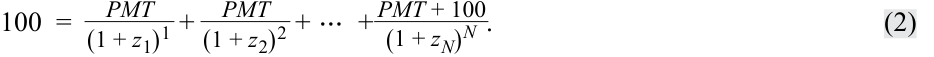
This equation is very similar to Equation 1, except PV = FV = 100. Recall that for a bond to trade at par, its coupon rate and yield-to-maturity must be equal. So, by solving for PMT , we also solve for the yield-to-maturity for the bond to trade at par . This single rate, divided by 100, is the par rate per period .
Phương trình này rất giống với Phương trình 1, ngoại trừ việc $PV = FV = 100$. Hãy nhớ lại rằng để một trái phiếu giao dịch ngang mệnh giá, lãi suất coupon và lợi suất đáo hạn của nó phải bằng nhau. Vì vậy, bằng cách giải tìm $PMT$, chúng ta cũng giải tìm được lợi suất đáo hạn để trái phiếu đó giao dịch ngang mệnh giá. Mức lãi suất duy nhất này, chia cho 100, chính là lãi suất ngang giá mỗi kỳ (par rate per period).
An example illustrates the calculation of par rates given spot rates. Suppose the current one-, two-, three-, and four- year spot rates on government bonds are 5.263%, 5.616%, 6.359%, and 7.008%, respectively. These are effective annual rates. The one-year par rate is 5.263%:
Một ví dụ sẽ minh họa việc tính toán lãi suất ngang giá khi biết lãi suất giao ngay. Giả sử lãi suất giao ngay 1 năm, 2 năm, 3 năm và 4 năm hiện tại trên trái phiếu chính phủ lần lượt là 5,263%, 5,616%, 6,359% và 7,008%. Đây là các mức lãi suất thực hàng năm (effective annual rates). Lãi suất ngang giá 1 năm là 5,263%:
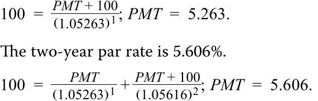
The three-year and four-year par rates are 6.306% and 6.899%, respectively.
Lãi suất ngang giá 2 năm là 5,606%:
Lãi suất ngang giá 3 năm và 4 năm lần lượt là 6,306% và 6,899%:
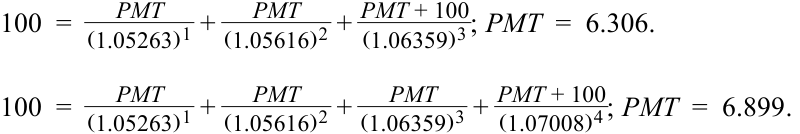
We can confirm that these are the par rates through the pricing formula. Using these par rates as the coupon and yield-to-maturity, the price of the two-year bond is 100: 5.606/(1.05606)1 + 105.606/(1.05606)2 = 100.
Chúng ta có thể xác nhận rằng đây là các mức lãi suất ngang giá thông qua công thức định giá. Sử dụng các mức lãi suất ngang giá này làm lãi suất coupon và lợi suất đáo hạn, giá của trái phiếu kỳ hạn 2 năm là 100:
Likewise, the price of the four-year bond is also 100:
Tương tự, giá của trái phiếu kỳ hạn 4 năm cũng là 100:
-
6.899/(1.06899)1 + 6.899/(1.06899)2 + 6.899/(1.06899)3 + 106.899/(1.06899)4
-
= 100.
- $$\frac{6.899}{(1.06899)^1} + \frac{6.899}{(1.06899)^2} + \frac{6.899}{(1.06899)^3} + \frac{106.899}{(1.06899)^4} = 100$$
EXAMPLE 2
VÍ DỤ 2
Bond Prices and Yields-to-Maturity Based on Par Rates
Giá Trái phiếu và Lợi suất Đáo hạn Dựa trên Lãi suất Ngang giá (Bond Prices and Yields-to-Maturity Based on Par Rates)
- The par rate for a bond may be calculated from the set of spot rates reflecting maturities up to and including the maturity of the desired par rate. Using the spot rate data shown in Exhibit 1, calculate the par rate for a three-year Canadian government bond. In this example (and subsequent examples), annual payments and compounding are assumed. Solution: Use Equation 2 to solve for PMT , as follows: _ _ _ 100 = (1 +PMT z 1)1 + (1 +PMT z 2)2 + ⋯ +PMT (1 ++ 100 zN )N. __ PMT _ PMT __ 100 =( 1 + 0.003117)1+ ( 1 + 0.00568)2+ ( 1 + 0.007977PMT+ 100)3. We can factor out PMT and then solve for it: _1 _1 ____________1 ____________100 100 = _PMT × (( 1 + 0.003117)1+ ( 1 + 0.00568)2+ ( 1 + 0.007977)3) + ( 1 + 0.007977)3. PMT = 0.7952.
- Lãi suất ngang giá của một trái phiếu có thể được tính từ tập hợp các lãi suất giao ngay phản ánh các kỳ hạn tính đến và bao gồm cả kỳ hạn của lãi suất ngang giá mong muốn. Sử dụng dữ liệu lãi suất giao ngay của Canada, hãy tính lãi suất ngang giá cho một trái phiếu chính phủ Canada kỳ hạn 3 năm. Trong ví dụ này (và các ví dụ tiếp theo), giả định thanh toán và ghép lãi hàng năm.
Lời giải: Sử dụng Phương trình 2 để giải tìm $PMT$, như sau:
To convert the coupon payment to a par rate per period, we divide by 100 (i.e., 0.7952/100). Thus, the par rate equals 0.7952%.
Chúng ta có thể đặt $PMT$ làm nhân tử chung và sau đó giải tìm nó:
Để chuyển đổi khoản thanh toán coupon sang lãi suất ngang giá mỗi kỳ, chúng ta chia cho 100 (tức là $0.7952/100$). Như vậy, lãi suất ngang giá bằng 0,7952%.
Forward Rates from Spot Rates
Lãi suất Kỳ hạn từ Lãi suất Giao ngay (Forward Rates from Spot Rates)
Spot rates can also be used to calculate implied forward rates (also known as forward yields), which are breakeven reinvestment rates. They link the return on an investment in a shorter-term zero-coupon bond to the return on an investment in a longer-term zero-coupon bond.
Lãi suất giao ngay cũng có thể được sử dụng để tính lãi suất kỳ hạn hàm ý (implied forward rates) (còn được gọi là lợi suất kỳ hạn – forward yields), vốn là các mức lãi suất tái đầu tư hòa vốn (breakeven reinvestment rates). Chúng liên kết tỷ suất sinh lợi trên một khoản đầu tư vào một trái phiếu không trả lãi định kỳ ngắn hạn hơn với tỷ suất sinh lợi trên một khoản đầu tư vào một trái phiếu không trả lãi định kỳ dài hạn hơn.
Suppose that the yields-to-maturity on three-year and four-year zero-coupon bonds are 3.65% and 4.18%, respectively. An analyst would like to know how much extra return is implied by these rates for investing for four rather than three years (i.e., an incremental year). This would be the implied one-year forward yield three years into the future, depicted in Exhibit 4.
Giả sử lợi suất đáo hạn trên các trái phiếu không trả lãi định kỳ kỳ hạn 3 năm và 4 năm lần lượt là 3,65% và 4,18%. Một chuyên viên phân tích muốn biết mức tỷ suất sinh lợi tăng thêm được hàm ý bởi các mức lãi suất này cho việc đầu tư trong 4 năm thay vì 3 năm (tức là thêm một năm tăng thêm) là bao nhiêu. Đây sẽ là lợi suất kỳ hạn 1 năm hàm ý tại thời điểm 3 năm trong tương lai, được mô tả trong Bảng 4.
Exhibit 4: The One-Year Implied Rate, Three Years from Today
Bảng 4: Lãi suất Hàm ý 1 năm, Ba năm Kể từ Hôm nay (Exhibit 4: The One-Year Implied Rate, Three Years from Today)
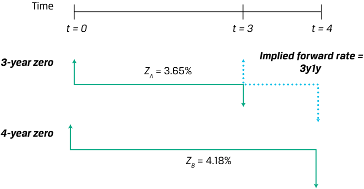
Chú thích hình ảnh: - Thời gian (Time): $t = 0$, $t = 3$, $t = 4$ - Từ $t = 0$ đến $t = 3$: Trái phiếu zero 3 năm ($Z_A = 3.65\%$) - Từ $t = 3$ đến $t = 4$: Lãi suất kỳ hạn hàm ý (Implied forward rate) =
3y1y- Từ $t = 0$ đến $t = 4$: Trái phiếu zero 4 năm ($Z_B = 4.18\%$)
The most common market practice is to name this forward rate the “3y1y,” pronounced “three-year into one-year rate,” or simply “3’s, 1’s.” The first number refers to the length of the forward period in years from today, and the second number refers to the tenor of the underlying bond, or its remaining time-to-maturity. In the money market, the forward rate is usually expressed in months.
Thông lệ thị trường phổ biến nhất là đặt tên cho lãi suất kỳ hạn này là “3y1y”, phát âm là “lãi suất 3 năm vào 1 năm” (“three-year into one-year rate”), hoặc đơn giản là “3’s, 1’s”. Con số đầu tiên đề cập đến độ dài của giai đoạn kỳ hạn tính bằng năm kể từ ngày hôm nay, và con số thứ hai đề cập đến kỳ hạn (tenor) của trái phiếu cơ sở, hay thời gian đáo hạn còn lại của nó. Trên thị trường tiền tệ, lãi suất kỳ hạn thường được biểu thị bằng tháng.
If the investor’s view on future bond yields is that the one-year yield in three years’ time is likely to be lower than the 3y1y, it might be better to simply invest in the four-year zero-coupon bond. However, if the investor’s view is that the one-year yield will be more than the implied forward rate, the investor might prefer the three-year bond and then reinvest at the expected higher rate for an additional one year. That explains why an implied forward rate is the breakeven reinvestment rate .
Nếu quan điểm của nhà đầu tư về lợi suất trái phiếu trong tương lai là lợi suất 1 năm tại thời điểm 3 năm tới có khả năng thấp hơn mức 3y1y, thì có lẽ tốt hơn là chỉ cần đầu tư vào trái phiếu không trả lãi định kỳ kỳ hạn 4 năm. Tuy nhiên, nếu quan điểm của nhà đầu tư là lợi suất 1 năm sẽ cao hơn lãi suất kỳ hạn hàm ý, nhà đầu tư có thể ưu tiên trái phiếu kỳ hạn 3 năm và sau đó tái đầu tư ở mức lãi suất kỳ vọng cao hơn đó trong một năm tiếp theo. Điều đó giải thích tại sao lãi suất kỳ hạn hàm ý lại là lãi suất tái đầu tư hòa vốn (breakeven reinvestment rate).
Equation 3 is a general formula for the implied forward rate, IFRA , B – A , for a security begins at t = A and matures at t = B (tenor B – A). To solve for it, we need the spot rate, zA , and the longer-term spot rate, zB . This is illustrated in Exhibit 5.
(1 + ZA )A × (1 + IFRA,B – A )B–A = (1 + ZB )B .
Phương trình 3 là công thức tổng quát cho lãi suất kỳ hạn hàm ý, $IFR_{A,B-A}$, đối với một chứng khoán bắt đầu tại $t = A$ và đáo hạn tại $t = B$ (kỳ hạn $B - A$). Để giải tìm nó, chúng ta cần lãi suất giao ngay $z_A$, và lãi suất giao ngay dài hạn hơn $z_B$. Điều này được minh họa trong Bảng 5.
~~(3)~~
Exhibit 5: Implied Forward Rates
Bảng 5: Lãi suất Kỳ hạn Hàm ý (Exhibit 5: Implied Forward Rates)
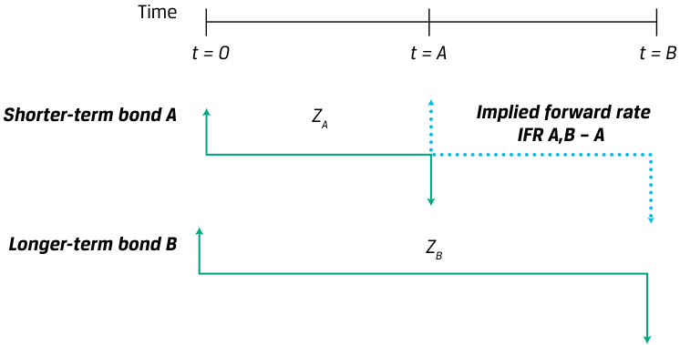
Chú thích hình ảnh: - Thời gian (Time): $t = 0$, $t = A$, $t = B$ - Từ $t = 0$ đến $t = A$: Trái phiếu ngắn hạn hơn $A$ ($Z_A$) - Từ $t = A$ đến $t = B$: Lãi suất kỳ hạn hàm ý ($IFR_{A,B-A}$) - Từ $t = 0$ đến $t = B$: Trái phiếu dài hạn hơn $B$ ($Z_B$)
Using Equation 3, let’s solve for the 3y1y since we know that the yields-to-maturity on three-year and four-year zero-coupon bonds are 3.65% and 4.18%, respectively:
Sử dụng Phương trình 3, hãy giải tìm mức 3y1y vì chúng ta biết rằng lợi suất đáo hạn trên các trái phiếu không trả lãi định kỳ kỳ hạn 3 năm và 4 năm lần lượt là 3,65% và 4,18%:
(1 + ZA )A × (1 + IFRA,B – A )B–A = (1 + ZB )B .
(1 + 0.0365)3 × (1 + IFR 3,1)1 = (1 + 0.0418)4 .
IFR 3,1 = 0.057863 = 5.79%
$IFR_{3,1} = 0.057863 = 5.79\%$
The “3y1y” implied forward yield is 5.79%. If the investor believes that the one-year yield will be higher than that in three years, she should invest in the three-year bond rather than the four-year bond (and vice versa).
Lợi suất kỳ hạn hàm ý “3y1y” là 5,79%. Nếu nhà đầu tư tin rằng lợi suất 1 năm sẽ cao hơn mức đó sau 3 năm nữa, cô ấy nên đầu tư vào trái phiếu kỳ hạn 3 năm thay vì trái phiếu kỳ hạn 4 năm (và ngược lại).
EXAMPLE 3
VÍ DỤ 3
Deriving Forward Rates from Spot Rates
Suy ra Lãi suất Kỳ hạn từ Lãi suất Giao ngay (Deriving Forward Rates from Spot Rates)
- Let’s return to the spot rates shown in Exhibit 1. In the following example, we will assume annual compounding (i.e., periodicity of 1). Calculate the 2y1y implied forward rate on Canadian government bonds.
- Hãy quay lại với các lãi suất giao ngay của Canada. Trong ví dụ sau đây, chúng ta sẽ giả định ghép lãi hàng năm (tức là định kỳ bằng 1). Hãy tính lãi suất kỳ hạn hàm ý 2y1y trên trái phiếu chính phủ Canada.
Solution:
Lời giải:
To calculate the 2y1y implied forward rate, we recognize that we are estimating the one-year rate at a point two years from Time 0. Therefore, A = 2, B = 3, ZA is the two-year spot rate, and ZB is the three-year spot rate:
Để tính lãi suất kỳ hạn hàm ý 2y1y, chúng ta nhận thấy rằng chúng ta đang ước tính lãi suất 1 năm tại một thời điểm cách Thời điểm 0 là 2 năm. Do đó, $A = 2$, $B = 3$, $Z_A$ là lãi suất giao ngay 2 năm ($0.00568$), và $Z_B$ là lãi suất giao ngay 3 năm ($0.007977$):
- (1 + ZA )A × (1 + IFRA,B – A )B–A = (1 + ZB )B .
- $$(1 + Z_A)^A \times (1 + IFR_{A,B-A})^{B-A} = (1 + Z_B)^B$$
(1 + 0.0188) × (1 + 0.0277) = (1 + Z2)2 .
IFR2,1 = 0.0126.
Thus, the implied forward rate for a one-year bond two years from now is 1.26%.
Như vậy, lãi suất kỳ hạn hàm ý cho một trái phiếu kỳ hạn 1 năm sau hai năm kể từ bây giờ là 1,26%.
Spot Rates from Forward Rates and Bond Pricing with Forward Rates
Lãi suất Giao ngay từ Lãi suất Kỳ hạn và Định giá Trái phiếu bằng Lãi suất Kỳ hạn (Spot Rates from Forward Rates and Bond Pricing with Forward Rates)
While forward rates can be calculated from spot rates, spot rates can also be calculated from forward rates, and either can be used for pricing because they are interconnected. An example will illustrate this process.
Trong khi lãi suất kỳ hạn có thể được tính từ lãi suất giao ngay, thì lãi suất giao ngay cũng có thể được tính từ lãi suất kỳ hạn, và có thể sử dụng một trong hai loại lãi suất này để định giá bởi vì chúng có mối liên hệ qua lại với nhau. Một ví dụ sẽ minh họa quá trình này.
Suppose the current sequence of one-year rates today and the one-year rate one, two, and three years from now are as follows:
Giả sử chuỗi lãi suất 1 năm hiện tại vào ngày hôm nay và lãi suất 1 năm tại thời điểm một, hai và ba năm kể từ bây giờ như sau:
| Time Period | Forward Rate |
|---|---|
| 0y1y | 1.88% |
| 1y1y | 2.77% |
| 2y1y | 3.54% |
| 3y1y | 4.12% |
| Khoảng thời gian (Time Period) | Lãi suất kỳ hạn (Forward Rate) |
|---|---|
| 0y1y | 1,88% |
| 1y1y | 2,77% |
| 2y1y | 3,54% |
| 3y1y | 4,12% |
These are annual rates stated for a periodicity of 1. They are effective annual rates. The first rate, the 0y1y, is the one-year spot rate. The others are one-year forward rates. Spot rates can be calculated using Equation 3. The two-year implied spot rate is 2.324%:
Đây là các mức lãi suất hàng năm được biểu thị cho định kỳ bằng 1. Chúng là các mức lãi suất thực hàng năm (effective annual rates). Mức lãi suất đầu tiên, 0y1y, là lãi suất giao ngay 1 năm. Các mức lãi suất còn lại là lãi suất kỳ hạn 1 năm. Lãi suất giao ngay có thể được tính bằng cách sử dụng Phương trình 3. Lãi suất giao ngay 2 năm hàm ý là 2,324%:
-
(1 + ZA )A × (1 + IFRA,B – A )B–A = (1 + ZB )B .
-
(1 + 0.0188)2 × (1 + 0.0277)1 = (1 + Z2)3 .
-
$$(1 + Z_A)^A \times (1 + IFR_{A,B-A})^{B-A} = (1 + Z_B)^B$$
-
$$(1 + 0.0188)^1 \times (1 + 0.0277)^1 = (1 + Z_2)^2$$(Lưu ý: Bản gốc in nhầm số mũ là 2 và 3, nhưng kết quả $Z_2 = 0.023240$ là căn bậc 2).
Z2 = 0.023240 = 2.324%
Notice how the product of the 0y1y and 1y1y is the two-year spot rate. This property holds in general, because the spot curve can be calculated by taking the geometric average of the forward rates. This is evident if we solve for the implied three- and four-year spot rates. Using Equation 3, we can use the implied two-year spot rate we just found to solve for the three-year spot rate:
Hãy chú ý cách tích của 0y1y và 1y1y tạo ra lãi suất giao ngay 2 năm. Tính chất này đúng trong trường hợp tổng quát, bởi vì đường cong lãi suất giao ngay có thể được tính bằng cách lấy trung bình nhân (geometric average) của các lãi suất kỳ hạn. Điều này thể hiện rõ nếu chúng ta giải tìm các lãi suất giao ngay 3 năm và 4 năm hàm ý. Sử dụng Phương trình 3, chúng ta có thể sử dụng lãi suất giao ngay 2 năm hàm ý vừa tìm được để giải tìm lãi suất giao ngay 3 năm:
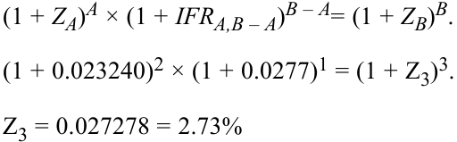
Or since the two-year spot rate is the product of the 0y1y and 1y1y rates, we can simply multiply across the forward curve for three- and four-year spot rates:
Hoặc vì lãi suất giao ngay 2 năm là tích của lãi suất 0y1y và 1y1y, chúng ta có thể chỉ cần nhân dọc theo đường cong lãi suất kỳ hạn để tìm lãi suất giao ngay 3 năm và 4 năm:
(1.0188 × 1.0277 × 1.0354) = (1+ Z3)3 ; Z3 = 0.27278
(1.0188 × 1.0277 × 1.0354 × 1.0412) = (1 + Z4)4 ; Z4 = 0.030741
Suppose that an analyst needs to value a four-year 3.75% annual coupon payment bond that has the same risks as the bonds used to obtain the forward curve. Using the implied spot rates, the value of the bond is 102.637 per 100 of par value.
Giả sử một chuyên viên phân tích cần định giá một trái phiếu trả coupon hàng năm ở mức 3,75%, kỳ hạn 4 năm có cùng rủi ro với các trái phiếu được sử dụng để thu được đường cong lãi suất kỳ hạn. Sử dụng các lãi suất giao ngay hàm ý, giá trị của trái phiếu là 102,637 trên mỗi 100 đơn vị mệnh giá:
( 1.01883.75)1+ ( 1.0232403.75)2+ ( 1.0272783.75)3+ ( 1.030741103.75)4= 102.637.
The bond also can be valued using the forward rates as follows:
Trái phiếu này cũng có thể được định giá bằng cách sử dụng các lãi suất kỳ hạn như sau:
_ ___3.75 ___3.753.75( 1.0188)+ ( 1.0188 × 1.0277)+ ( 1.0188 × 1.0277 × 1.0354) + _____( 1.0188 × 1.0277 × 1.0354 × 1.0412103.75)= 102.637.
EXAMPLE 4
VÍ DỤ 4
Deriving Spot Rates from Forward Rates and Pricing Bonds Using Forward Rates
Suy ra Lãi suất Giao ngay từ Lãi suất Kỳ hạn và Định giá Trái phiếu Sử dụng Lãi suất Kỳ hạn (Deriving Spot Rates from Forward Rates and Pricing Bonds Using Forward Rates)
Suppose we have the following forward rates for Canadian government bonds:
Giả sử chúng ta có các lãi suất kỳ hạn sau đây đối với trái phiếu chính phủ Canada:
| Forward tenor | Rates |
|---|---|
| 0y1y | 0.3117% |
| 1y1y | 0.8250% |
| 2y1y | 1.2587% |
| 1y2y | 1.0416% |
| Kỳ hạn kỳ hạn (Forward tenor) | Lãi suất (Rates) |
|---|---|
| 0y1y | 0,3117% |
| 1y1y | 0,8250% |
| 2y1y | 1,2587% |
| 1y2y | 1,0416% |
- Calculate a three-year spot rate on Canadian government bonds using the forward rate information.
- Tính lãi suất giao ngay 3 năm trên trái phiếu chính phủ Canada bằng cách sử dụng thông tin lãi suất kỳ hạn.
Solution:
Lời giải:
The three-year spot rate is calculated using three of the one-year forward rates above: the 0y1y, 1y1y, and 2y1y.
Lãi suất giao ngay 3 năm được tính bằng cách sử dụng ba trong số các lãi suất kỳ hạn 1 năm ở trên: 0y1y, 1y1y, và 2y1y.
- (1.003117 × 1.008250 × 1.012587) = (1 + z 3)3 .
- $$(1.003117 \times 1.008250 \times 1.012587) = (1 + z_3)^3$$
z 3 = 0.7977%.
- Calculate the value of a three-year Canadian government bond paying a 0.50% coupon using forward rates.
- Tính giá trị của một trái phiếu chính phủ Canada kỳ hạn 3 năm trả coupon 0,50% bằng cách sử dụng lãi suất kỳ hạn.
Solution:
Lời giải:
PV = 99.126
$PV = 99.126$
This example corresponds to Question 4 in the earlier Lesson Question Set. A review of the solution to that problem indicates that we have shown that the value of the three-year 0.50% coupon Canadian government bond is equal to 99.126 regardless of whether we use spot rates or forward rates.
Ví dụ này tương ứng với Câu hỏi 4 trong Bộ Câu hỏi Bài học trước đó. Việc xem lại lời giải cho bài toán đó cho thấy chúng ta đã chứng minh được rằng giá trị của trái phiếu chính phủ Canada kỳ hạn 3 năm, lãi suất coupon 0,50% bằng 99,126 bất kể chúng ta sử dụng lãi suất giao ngay hay lãi suất kỳ hạn.
QUESTION SET
BỘ CÂU HỎI (QUESTION SET)
- Contrast a par rate and a yield-to-maturity.
- Solution:
- Đối chiếu lãi suất ngang giá (par rate) và lợi suất đáo hạn (yield-to-maturity).
- Lời giải:
A par rate is the YTM and coupon rate assuming a bond is priced at par value and cash flows are discounted using spot rates, while the yield-to-maturity is the internal rate of return on a bond’s cash flows using a bond’s current price.
Lãi suất ngang giá là YTM và lãi suất coupon với giả định một trái phiếu được định giá ngang mệnh giá và các dòng tiền được chiết khấu bằng cách sử dụng lãi suất giao ngay, trong khi lợi suất đáo hạn là tỷ suất hoàn vốn nội bộ (internal rate of return) trên các dòng tiền của một trái phiếu bằng cách sử dụng mức giá hiện tại của trái phiếu đó.
- Calculate a three-year par rate given the following spot rates. Assume annual compounding:
- Tính lãi suất ngang giá 3 năm khi biết các lãi suất giao ngay sau đây. Giả định ghép lãi hàng năm:
| 1-year 3.0000% |
|---|
| 2-year 2.8000% |
| 3-year 2.6000% |
| 1 năm: 3,0000% |
|---|
| 2 năm: 2,8000% |
| 3 năm: 2,6000% |
Solution:
Lời giải:
- 2.607%.
- 2,607%.
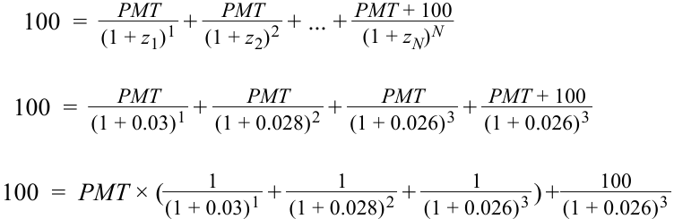
- PMT = 2.607%
- Match the implied forward rate to the spot rates necessary to calculate it.
- $PMT = 2.607\%$
- Ghép nối lãi suất kỳ hạn hàm ý với các lãi suất giao ngay cần thiết để tính nó.
| 1. 1y2y | A. Three-year and two-year spot rates |
|---|---|
| 2. 3y2y | B. Three-year and one-year spot rates |
| 3. 2y1y | h C. Five-year and three-year spot rates |
| 1. 1y2y | A. Lãi suất giao ngay 3 năm và 2 năm |
|---|---|
| 2. 3y2y | B. Lãi suất giao ngay 3 năm và 1 năm |
| 3. 2y1y | C. Lãi suất giao ngay 5 năm và 3 năm |
Solution:
Lời giải:
- B. The 1y2y is a two-year forward rate in one year. Thus, we start with the three-year spot rate and use the one-year spot rate to find an implied two- year forward rate.
- B. 1y2y là lãi suất kỳ hạn 2 năm tại thời điểm sau 1 năm. Do đó, chúng ta bắt đầu với lãi suất giao ngay 3 năm và sử dụng lãi suất giao ngay 1 năm để tìm lãi suất kỳ hạn 2 năm hàm ý.
-
C. The 3y2y is a two-year forward rate in three years. Thus, we start with the five-year spot rate and use the three-year spot rate to find an implied two-year forward rate.
-
A. The 2y1y is a one-year forward rate in two years. Thus, we start with the three-year spot rate and use the two-year spot rate to find an implied one-year forward rate.
-
Determine the missing words in the following sentence: An implied forward rate represents a ______ reinvestment rate such that no arbitrage opportunities exist between spot and forward rates.
- Solution:
-
C. 3y2y là lãi suất kỳ hạn 2 năm tại thời điểm sau 3 năm. Do đó, chúng ta bắt đầu với lãi suất giao ngay 5 năm và sử dụng lãi suất giao ngay 3 năm để tìm lãi suất kỳ hạn 2 năm hàm ý.
-
A. 2y1y là lãi suất kỳ hạn 1 năm tại thời điểm sau 2 năm. Do đó, chúng ta bắt đầu với lãi suất giao ngay 3 năm và sử dụng lãi suất giao ngay 2 năm để tìm lãi suất kỳ hạn 1 năm hàm ý.
-
Xác định từ còn thiếu trong câu sau: Lãi suất kỳ hạn hàm ý đại diện cho một lãi suất tái đầu tư ______ sao cho không tồn tại cơ hội kinh doanh chênh lệch giá (arbitrage opportunities) giữa lãi suất giao ngay và lãi suất kỳ hạn.
- Lời giải:
An implied forward rate represents a breakeven reinvestment rate such that no arbitrage opportunities exist between spot and forward rates.
Lãi suất kỳ hạn hàm ý đại diện cho một lãi suất tái đầu tư hòa vốn (breakeven) sao cho không tồn tại cơ hội kinh doanh chênh lệch giá giữa lãi suất giao ngay và lãi suất kỳ hạn.
- Calculate the implied forward rate 2y3y given the following spot rates. Assume annual compounding.
- Tính lãi suất kỳ hạn hàm ý 2y3y khi biết các lãi suất giao ngay sau đây. Giả định ghép lãi hàng năm.
| Tenor Spot Rate |
|---|
| 1-year 2.0% |
| 2-year 2.3% |
| 3-year 2.5% |
| 4-year 2.6% |
| 5-year 2.4% |
| Kỳ hạn (Tenor) — Lãi suất giao ngay (Spot Rate) |
|---|
| 1 năm: 2,0% |
| 2 năm: 2,3% |
| 3 năm: 2,5% |
| 4 năm: 2,6% |
| 5 năm: 2,4% |
Solution:
Lời giải:
2.467%.
2,467%.
(1 + ZA )A × (1 + IFRA,B – A )B–A = (1 + ZB )B
(1 + 0.023)2 × (1 + IFR 2,3)3 = (1 + 0.024)5 Z3 = 2.467%
- Calculate the price of a 2% coupon bond with 100 par value maturing in three years given the following forward rates, and demonstrate that this price is equivalent regardless of whether spot rates or forward rates are used as discount rates. Assume annual compounding and the following forward rates.
- Tính giá của một trái phiếu coupon 2% có mệnh giá 100 đáo hạn sau 3 năm khi biết các lãi suất kỳ hạn sau đây, và chứng minh rằng mức giá này là tương đương bất kể lãi suất giao ngay hay lãi suất kỳ hạn được sử dụng làm lãi suất chiết khấu. Giả định ghép lãi hàng năm và các lãi suất kỳ hạn sau đây.
| Tenor Forward Rate |
|---|
| 0y1y 1.5% |
| 1y1y 2.5% |
| 2y1y 3.5% |
| Kỳ hạn (Tenor) — Lãi suất kỳ hạn (Forward Rate) |
|---|
| 0y1y: 1,5% |
| 1y1y: 2,5% |
| 2y1y: 3,5% |
Solution:
Lời giải:
The price is 98.619. Forward rate approach:
Mức giá là 98,619. Phương pháp lãi suất kỳ hạn:
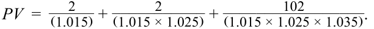
PV = 98.6190.
$PV = 98.6190$.
The implied one-, two-, and three-year spot rates are as follows: One-year = 1.5%.
Các lãi suất giao ngay 1 năm, 2 năm và 3 năm hàm ý như sau: - 1 năm = 1,5%. - 2 năm = $(1.015 \times 1.025)^{(1/2)} - 1 = 1.999\%$. - 3 năm = $(1.015 \times 1.025 \times 1.035)^{(1/3)} - 1 = 2.4967\%$.
Two-year = (1.015 × 1.025)(1/2) – 1 = 1.999%. Three-year = (1.015 × 1.025 × 1.035)(1/3) – 1 = 2.4967%. Using the spot prices to price the bond gives the following:
Sử dụng các lãi suất giao ngay để định giá trái phiếu cho kết quả sau:
2 _2 _102 _PV =( 1.015)1+ ( 1.01999)2+ ( 1.024967)3. PV = 98.6190.
- Demonstrate how an investor with a five-year investment horizon would optimally decide between the two following strategies:
-
Buy a three-year government bond at the 3% spot rate, and then reinvest for two years at the expected future two-year rate.
-
Buy a five-year government bond at the 4% spot rate.
- Chứng minh cách một nhà đầu tư có thời hạn đầu tư 5 năm sẽ quyết định tối ưu giữa hai chiến lược sau đây:
-
Mua một trái phiếu chính phủ kỳ hạn 3 năm ở mức lãi suất giao ngay 3%, và sau đó tái đầu tư trong 2 năm ở mức lãi suất 2 năm dự kiến trong tương lai.
-
Mua một trái phiếu chính phủ kỳ hạn 5 năm ở mức lãi suất giao ngay 4%.
Solution:
Lời giải:
Calculate the implied two-year forward rate in three years:
Tính lãi suất kỳ hạn 2 năm hàm ý tại thời điểm sau 3 năm:
-
(1 + ZA )A × (1 + IFRA,B – A )B–A = (1 + ZB )B .
-
(1 + 0.03)3 × (1 + IFR3,2)2 = (1 + 0.04)5 .
-
$$(1 + Z_A)^A \times (1 + IFR_{A,B-A})^{B-A} = (1 + Z_B)^B$$
-
$$(1 + 0.03)^3 \times (1 + IFR_{3,2})^2 = (1 + 0.04)^5$$
IFR 3,2 = 5.52%
If the investor believes that the two-year rate in three years will be greater than 5.52%, then the better strategy is to buy the three-year government bond and reinvest at a higher rate. If the investor believes that the two-year rate in three years will be less than 5.52%, then the five-year bond should be purchased. The implied forward rate represents the breakeven reinvestment rate.
Nếu nhà đầu tư tin rằng lãi suất 2 năm sau 3 năm nữa sẽ lớn hơn 5,52%, thì chiến lược tốt hơn là mua trái phiếu chính phủ kỳ hạn 3 năm và tái đầu tư ở mức lãi suất cao hơn. Nếu nhà đầu tư tin rằng lãi suất 2 năm sau 3 năm nữa sẽ nhỏ hơn 5,52%, thì nên mua trái phiếu kỳ hạn 5 năm. Lãi suất kỳ hạn hàm ý đại diện cho lãi suất tái đầu tư hòa vốn.
4
4
SPOT, PAR, AND FORWARD YIELD CURVES AND INTERPRETING THEIR RELATIONSHIP
ĐƯỜNG CONG LỢI SUẤT GIAO NGAY, NGANG GIÁ VÀ KỲ HẠN CŨNG NHƯ DIỄN GIẢI MỐI QUAN HỆ GIỮA CHÚNG (SPOT, PAR, AND FORWARD YIELD CURVES AND INTERPRETING THEIR RELATIONSHIP)
compare the spot curve, par curve, and forward curve
so sánh đường cong lãi suất giao ngay, đường cong lãi suất ngang giá, và đường cong lãi suất kỳ hạn
Because spot, par, and forward rates are interconnected, so are the shapes of the spot, par, and forward curves. This analysis is best illustrated through an example. In an earlier lesson, we used spot rates to compute par rates and forward rates for Canadian and Australian government bonds. We can use these rates to build yield curves across a range of maturities, shown in Exhibit 1.
Bởi vì lãi suất giao ngay, lãi suất ngang giá và lãi suất kỳ hạn có mối liên hệ qua lại với nhau, nên hình dạng của đường cong lãi suất giao ngay, đường cong lãi suất ngang giá và đường cong lãi suất kỳ hạn cũng vậy. Phân tích này được minh họa tốt nhất thông qua một ví dụ. Trong một bài học trước, chúng ta đã sử dụng lãi suất giao ngay để tính lãi suất ngang giá và lãi suất kỳ hạn cho trái phiếu chính phủ Canada và Úc. Chúng ta có thể sử dụng các mức lãi suất này để xây dựng các đường cong lợi suất trên một dải các kỳ hạn, được hiển thị bên dưới.
Spot, Par, and Forward Curves (Canada and Australia)
Đường cong Lãi suất Giao ngay, Ngang giá và Kỳ hạn (Canada và Úc) (Spot, Par, and Forward Curves (Canada and Australia))
A. Spot, Par, and Forward Curves: Canadian Government Bonds
A. Đường cong Lãi suất Giao ngay, Ngang giá và Kỳ hạn: Trái phiếu Chính phủ Canada (Spot, Par, and Forward Curves: Canadian Government Bonds)
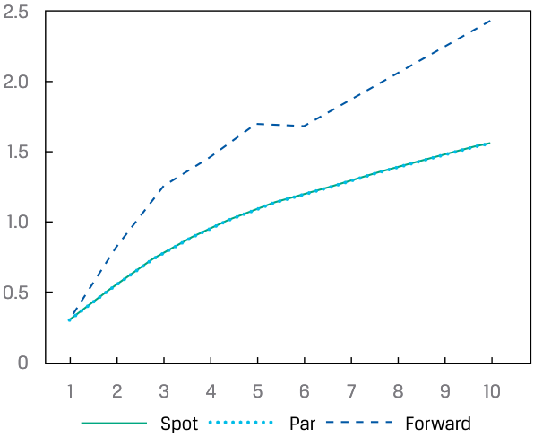
Chú thích hình ảnh: - Trục tung: Lãi suất (%) (từ 0 đến 2,5) - Trục hoành: Kỳ hạn (năm) (từ 1 đến 10) - Các đường biểu diễn: Lãi suất giao ngay (Spot), Lãi suất ngang giá (Par), Lãi suất kỳ hạn (Forward)
B. Spot, Par, and Forward Curves: Australian Government Bonds
B. Đường cong Lãi suất Giao ngay, Ngang giá và Kỳ hạn: Trái phiếu Chính phủ Úc (Spot, Par, and Forward Curves: Australian Government Bonds)
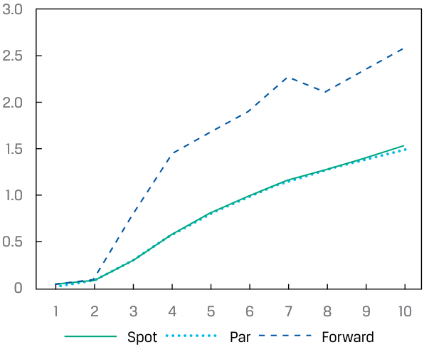
Chú thích hình ảnh: - Trục tung: Lãi suất (%) (từ 0 đến 3,0) - Trục hoành: Kỳ hạn (năm) (từ 1 đến 10) - Các đường biểu diễn: Lãi suất giao ngay (Spot), Lãi suất ngang giá (Par), Lãi suất kỳ hạn (Forward)
We can make the following general observations:
Chúng ta có thể đưa ra các nhận xét tổng quát sau đây:
1. The spot rates are positive, and the spot curve is upward sloping.
1. Lãi suất giao ngay đều dương, và đường cong lãi suất giao ngay dốc lên (upward sloping).
2. The spot and par curves are nearly identical; the par rates are slightly lower than the spot rates, and the (slight) difference between the spot and par curves is greater at longer maturities.
2. Đường cong lãi suất giao ngay và đường cong lãi suất ngang giá gần như trùng nhau; lãi suất ngang giá thấp hơn một chút so với lãi suất giao ngay, và mức chênh lệch (nhỏ) giữa đường cong lãi suất giao ngay và đường cong lãi suất ngang giá lớn hơn ở các kỳ hạn dài hơn.
3. Forward rates are greater than the spot and par rates.
3. Lãi suất kỳ hạn lớn hơn lãi suất giao ngay và lãi suất ngang giá.
These observations stem from general relationships between the shapes of the curves. If the spot curve is upward sloping, par rates will be near—but below—spot rates, particularly at the long end of the curve. This is because the low short-term spot rates result in higher bond prices, particularly for longer-term bonds, which results in low par rates when we do the calculation that assumes the price is 100% of par. Forward rates being above spot rates, if the spot curve is upward sloping, follows from the prior lesson, which established forward rates as incremental rates of return.
Những nhận xét này bắt nguồn từ các mối quan hệ tổng quát giữa hình dạng của các đường cong. Nếu đường cong lãi suất giao ngay dốc lên, lãi suất ngang giá sẽ nằm gần—nhưng thấp hơn—lãi suất giao ngay, đặc biệt là ở đầu dài hạn của đường cong. Điều này là do các mức lãi suất giao ngay ngắn hạn thấp dẫn đến giá trái phiếu cao hơn, đặc biệt là đối với các trái phiếu dài hạn hơn, từ đó dẫn đến lãi suất ngang giá thấp khi chúng ta thực hiện phép tính giả định mức giá bằng 100% mệnh giá. Việc lãi suất kỳ hạn nằm trên lãi suất giao ngay, nếu đường cong lãi suất giao ngay dốc lên, xuất phát từ bài học trước, vốn đã xác lập lãi suất kỳ hạn là các tỷ suất sinh lợi tăng thêm (incremental rates of return).
Exhibit 6 shows the spot, par, and forward curves if the spot curve is flat, assumed to be 2.50% for all maturities. When the spot rate is constant across all maturities, the par and forward rates will equate to the spot rate across all maturities as well. In short, a flat spot rate curve reflects no expectations of changes in future interest rates; thus forward rates equal spot rates. In this particular example, government bonds would pay a 2.5% coupon rate, and the bonds would be priced at par value (thus, the par rate is also 2.5%).
Bảng 6 hiển thị các đường cong lãi suất giao ngay, ngang giá và kỳ hạn nếu đường cong lãi suất giao ngay nằm ngang (flat), được giả định ở mức 2,50% cho tất cả các kỳ hạn. Khi lãi suất giao ngay không đổi qua tất cả các kỳ hạn, lãi suất ngang giá và lãi suất kỳ hạn cũng sẽ bằng với lãi suất giao ngay qua tất cả các kỳ hạn. Tóm lại, một đường cong lãi suất giao ngay nằm ngang phản ánh việc không có kỳ vọng về sự thay đổi trong lãi suất tương lai; do đó lãi suất kỳ hạn bằng lãi suất giao ngay. Trong ví dụ cụ thể này, trái phiếu chính phủ sẽ trả lãi suất coupon 2,5%, và các trái phiếu sẽ được định giá ngang mệnh giá (do đó, lãi suất ngang giá cũng là 2,5%).
Exhibit 6: Flat Term Structure
Bảng 6: Cấu trúc Kỳ hạn Nằm ngang (Exhibit 6: Flat Term Structure)
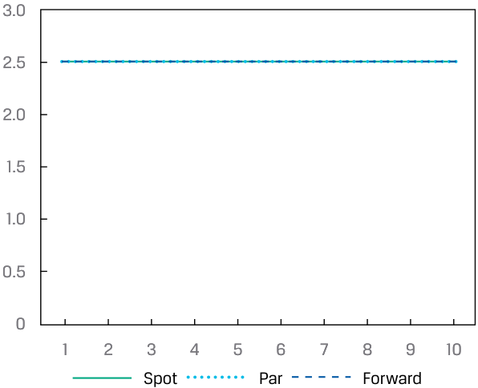
Chú thích hình ảnh: - Trục tung: Lãi suất (%) (từ 0 đến 3,0) - Trục hoành: Kỳ hạn (năm) (từ 1 đến 10) - Các đường biểu diễn: Lãi suất giao ngay (Spot), Lãi suất ngang giá (Par), Lãi suất kỳ hạn (Forward) trùng nhau ở mức 2,5%
Exhibit 7 shows the spot, par, and forward curves for a downward-sloping (inverted) spot curve or falling spot rates as maturities lengthen. Starting from a 4% 1-year spot rate, rates fall to 1.90% for a maturity of 10 years. As in the previous examples, the par rates are similar to the spot rates. The inverted term structure of spot rates reflects expectations of significantly lower one-year rates in future years, and this is shown by the forward curve. In this example, the spot rate term structure implies a one-year rate of 0.1175% expected in nine years.
Bảng 7 hiển thị các đường cong lãi suất giao ngay, ngang giá và kỳ hạn đối với một đường cong lãi suất giao ngay dốc xuống (đảo ngược – downward-sloping / inverted) hay lãi suất giao ngay giảm dần khi kỳ hạn dài ra. Bắt đầu từ mức lãi suất giao ngay 1 năm là 4%, lãi suất giảm xuống 1,90% cho kỳ hạn 10 năm. Giống như trong các ví dụ trước, lãi suất ngang giá tương tự như lãi suất giao ngay. Cấu trúc kỳ hạn đảo ngược của lãi suất giao ngay phản ánh kỳ vọng về các mức lãi suất 1 năm thấp hơn đáng kể trong những năm tương lai, và điều này được thể hiện qua đường cong lãi suất kỳ hạn. Trong ví dụ này, cấu trúc kỳ hạn của lãi suất giao ngay ngụ ý mức lãi suất 1 năm là 0,1175% được kỳ vọng sau 9 năm nữa.
Exhibit 7: Inverted Term Structure
Bảng 7: Cấu trúc Kỳ hạn Đảo ngược (Exhibit 7: Inverted Term Structure)
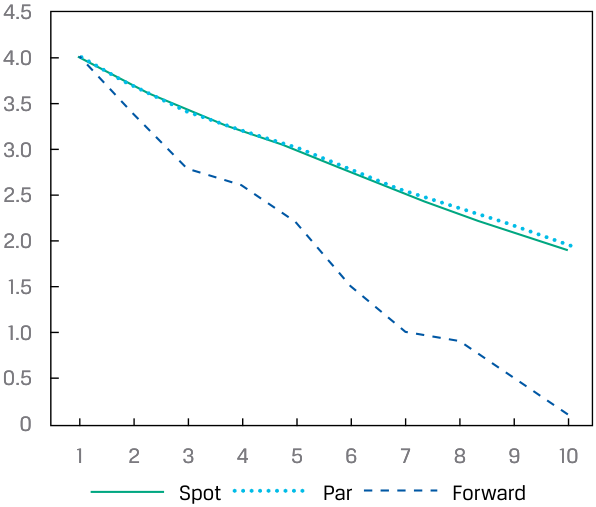
Chú thích hình ảnh: - Trục tung: Lãi suất (%) (từ 0 đến 4,5) - Trục hoành: Kỳ hạn (năm) (từ 1 đến 10) - Các đường biểu diễn: Lãi suất giao ngay (Spot), Lãi suất ngang giá (Par), Lãi suất kỳ hạn (Forward)
We conclude with Exhibit 8, which summarizes the general relationship between the spot, par, and forward curves for different spot curve shapes.
Chúng ta kết thúc với Bảng 8, tóm tắt mối quan hệ tổng quát giữa các đường cong lãi suất giao ngay, ngang giá và kỳ hạn đối với các hình dạng đường cong lãi suất giao ngay khác nhau.
Exhibit 8: Spot, Par, and Forward Curve Relationship
Bảng 8: Mối quan hệ giữa Đường cong Lãi suất Giao ngay, Ngang giá và Kỳ hạn (Exhibit 8: Spot, Par, and Forward Curve Relationship)
| Spot Curve Shape | Par Curve | Forward Curve |
|---|---|---|
| Upward Sloping | Below spot curve | Above spot curve |
| Flat | Equal to spot curve | Equal to spot curve |
| Downward Sloping (Inverted) |
Above spot curve | Below spot curve |
| Hình dạng đường cong lãi suất giao ngay (Spot Curve Shape) | Đường cong lãi suất ngang giá (Par Curve) | Đường cong lãi suất kỳ hạn (Forward Curve) |
|---|---|---|
| Dốc lên (Upward Sloping) | Nằm dưới đường cong lãi suất giao ngay (Below spot curve) | Nằm trên đường cong lãi suất giao ngay (Above spot curve) |
| Nằm ngang (Flat) | Bằng đường cong lãi suất giao ngay (Equal to spot curve) | Bằng đường cong lãi suất giao ngay (Equal to spot curve) |
| Dốc xuống / Đảo ngược (Downward Sloping / Inverted) | Nằm trên đường cong lãi suất giao ngay (Above spot curve) | Nằm dưới đường cong lãi suất giao ngay (Below spot curve) |
QUESTION SET
BỘ CÂU HỎI (QUESTION SET)
- The chart below shows a spot curve and its implied forward curve. Identify the forward curve, and justify your choice.
- Biểu đồ bên dưới hiển thị một đường cong lãi suất giao ngay và đường cong lãi suất kỳ hạn hàm ý của nó. Hãy xác định đường cong lãi suất kỳ hạn, và giải thích sự lựa chọn của bạn.
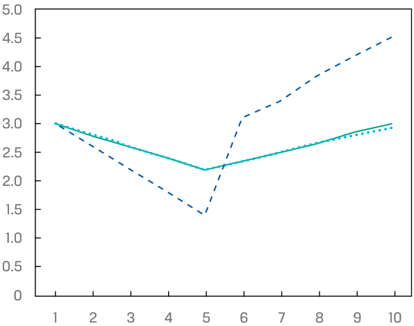
Chú thích hình ảnh: - Trục tung: Lãi suất (%) (từ 0 đến 5,0) - Trục hoành: Kỳ hạn (năm) (từ 1 đến 10)
Solution:
Lời giải:
The forward curve is represented by the line that moves from 3.0% to approximately 1.5% in Year 5 and then slopes dramatically higher from Year 5 to 6, ending at about 4.5% in Year 10.
Đường cong lãi suất kỳ hạn được đại diện bởi đường đi từ 3,0% xuống xấp xỉ 1,5% ở Năm 5 và sau đó dốc mạnh lên từ Năm 5 đến Năm 6, kết thúc ở mức khoảng 4,5% ở Năm 10.
When the spot curve is sloping downward (Years 1–5), forward rates will be below spot rates. When the spot curve is sloping upward (Years 6–10), forward rates will be above spot rates.
Khi đường cong lãi suất giao ngay dốc xuống (Năm 1–5), lãi suất kỳ hạn sẽ nằm bên dưới lãi suất giao ngay. Khi đường cong lãi suất giao ngay dốc lên (Năm 6–10), lãi suất kỳ hạn sẽ nằm bên trên lãi suất giao ngay.
For Questions 2 and 3, refer to the spot rate data shown in Exhibit 9. It is important to note that some bonds will trade at negative yield. This was prevalent among developed market sovereign bonds in the wake of the financial crisis as central banks pursued accommodative monetary policy in response to below-target inflation. Negative rates do not change the fundamental mathematics used in bond pricing.
Đối với Câu hỏi 2 và 3, hãy tham khảo dữ liệu lãi suất giao ngay được hiển thị trong Bảng 9. Điều quan trọng cần lưu ý là một số trái phiếu sẽ giao dịch ở mức lợi suất âm. Điều này từng phổ biến trong số các trái phiếu chính phủ của thị trường phát triển sau cuộc khủng hoảng tài chính khi các ngân hàng trung ương theo đuổi chính sách tiền tệ nới lỏng để đối phó với mức lạm phát dưới mục tiêu. Lãi suất âm không làm thay đổi toán học cơ bản được sử dụng trong định giá trái phiếu.
Exhibit 9: Negative Spot Rates (Germany and Switzerland)
Bảng 9: Lãi suất Giao ngay Âm (Đức và Thụy Sĩ) (Exhibit 9: Negative Spot Rates (Germany and Switzerland))
| Maturity | Germany | Switzerland |
|---|---|---|
| 1-year | –0.6965% | –0.7882% |
| 2-year | –0.7034% | –0.7133% |
| 3-year | –0.7021% | –0.6435% |
| 4-year | –0.6418% | –0.5615% |
| 5-year | –0.5578% | –0.4757% |
| 6-year | –0.4796% | –0.4080% |
| 7-year | –0.4014% | –0.3402% |
| 8-year | –0.3269% | –0.2673% |
| 9-year | –0.2524% | –0.1945% |
| 10-year | –0.1779% | –0.1216% |
| Kỳ hạn (Maturity) | Đức (Germany) | Thụy Sĩ (Switzerland) |
|---|---|---|
| 1 năm | –0,6965% | –0,7882% |
| 2 năm | –0,7034% | –0,7133% |
| 3 năm | –0,7021% | –0,6435% |
| 4 năm | –0,6418% | –0,5615% |
| 5 năm | –0,5578% | –0,4757% |
| 6 năm | –0,4796% | –0,4080% |
| 7 năm | –0,4014% | –0,3402% |
| 8 năm | –0,3269% | –0,2673% |
| 9 năm | –0,2524% | –0,1945% |
| 10 năm | –0,1779% | –0,1216% |
- Calculate the implied one-year forward rate in nine years in Switzerland. Solution:
- Tính lãi suất kỳ hạn 1 năm hàm ý tại thời điểm sau 9 năm ở Thụy Sĩ.
The question is requesting the 9y1y forward rate. This is calculated from the 10-year and 9-year spot rates, as follows:
Lời giải:
- (1 + ZA )A × (1 + IFRA,B – A )B–A = (1 + ZB )B
(1 + -0.001945)9 × (1 + IFR 9,1)1 = (1 + -0.001216)10
Câu hỏi đang yêu cầu tính lãi suất kỳ hạn 9y1y. Lãi suất này được tính từ lãi suất giao ngay 10 năm và 9 năm, như sau:
IFR 9,1 = 0.537%
- $$(1 + Z_A)^A \times (1 + IFR_{A,B-A})^{B-A} = (1 + Z_B)^B$$
Thus, the implied one-year forward rate in nine years for Swiss government bonds is 0.537%.
Như vậy, lãi suất kỳ hạn 1 năm hàm ý tại thời điểm sau 9 năm đối với trái phiếu chính phủ Thụy Sĩ là 0,537%.
- Explain why a country with negative spot rates, such as Switzerland, may have positive forward rates.
- Giải thích tại sao một quốc gia có lãi suất giao ngay âm, chẳng hạn như Thụy Sĩ, lại có thể có lãi suất kỳ hạn dương.
Solution:
Lời giải:
As shown in earlier examples, an upward-sloping spot curve (which Switzerland has) will be characterized by forward rates that are greater than spot rates. As the negative rates become less negative and move closer to zero, the more likely that forward rates will be positive with an upward-sloping spot curve.
Như đã chỉ ra trong các ví dụ trước, một đường cong lãi suất giao ngay dốc lên (mà Thụy Sĩ đang có) sẽ được đặc trưng bởi các mức lãi suất kỳ hạn lớn hơn lãi suất giao ngay. Khi các mức lãi suất âm trở nên bớt âm hơn và tiến gần hơn về mức không, khả năng lãi suất kỳ hạn mang giá trị dương với một đường cong lãi suất giao ngay dốc lên sẽ càng cao.
- The following chart shows spot and forward curves for German sovereign bonds. Explain why the forward curve is close to identical to the spot curve for two and three-year maturities.
- Biểu đồ sau đây hiển thị đường cong lãi suất giao ngay và đường cong lãi suất kỳ hạn đối với trái phiếu chính phủ Đức. Hãy giải thích tại sao đường cong lãi suất kỳ hạn lại gần như trùng khớp với đường cong lãi suất giao ngay ở các kỳ hạn 2 năm và 3 năm.
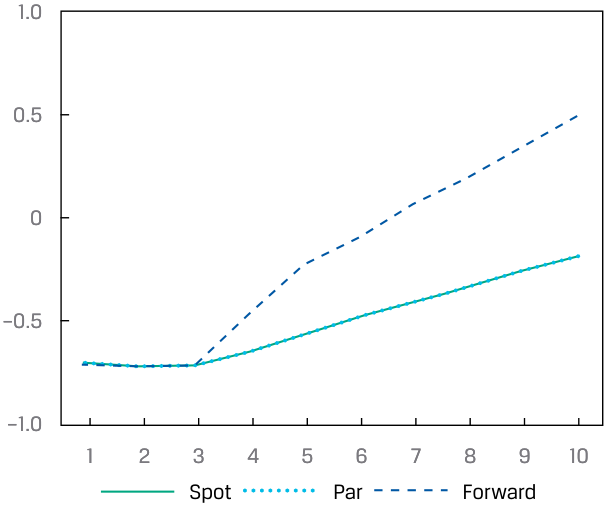
Chú thích hình ảnh: - Trục tung: Lãi suất (%) (từ –1,0 đến 1,0) - Trục hoành: Kỳ hạn (năm) (từ 1 đến 10) - Các đường biểu diễn: Lãi suất giao ngay (Spot), Lãi suất ngang giá (Par), Lãi suất kỳ hạn (Forward)
Solution:
Lời giải:
In flat term structure environments, forward rates equal spot rates. The spot rates in Germany for two and three-year maturities appear to be approximately equivalent to the one-year spot rate. Thus, Germany’s term structure is flat for the first three years, and forward rates should be approximately equal to spot rates.
Trong các môi trường cấu trúc kỳ hạn nằm ngang (flat term structure), lãi suất kỳ hạn bằng lãi suất giao ngay. Lãi suất giao ngay ở Đức cho các kỳ hạn 2 năm và 3 năm dường như xấp xỉ tương đương với lãi suất giao ngay 1 năm. Như vậy, cấu trúc kỳ hạn của Đức nằm ngang trong 3 năm đầu tiên, và lãi suất kỳ hạn sẽ xấp xỉ bằng lãi suất giao ngay.
~~PRACTICE PROBLEMS~~
BÀI TẬP THỰC HÀNH (PRACTICE PROBLEMS)
The following information relates to questions 1-9
Thông tin sau đây liên quan đến câu hỏi 1-9
Use the spot rates provided to answer the following questions.
Sử dụng các lãi suất giao ngay được cung cấp để trả lời các câu hỏi sau đây.
Government Bond Spot Rates
Lãi suất Giao ngay của Trái phiếu Chính phủ (Government Bond Spot Rates)
| Maturity | Canada | Australia | Germany | Switzerland |
|---|---|---|---|---|
| 1-year | 0.3117% | 0.0272% | –0.6965% | –0.7882% |
| 2-year | 0.5680% | 0.0675% | –0.7034% | –0.7133% |
| 3-year | 0.7977% | 0.3003% | –0.7021% | –0.6435% |
| 4-year | 0.9640% | 0.5853% | –0.6418% | –0.5615% |
| 5-year | 1.1105% | 0.8052% | –0.5578% | –0.4757% |
| 6-year | 1.2052% | 0.9877% | –0.4796% | –0.4080% |
| 7-year | 1.2998% | 1.1702% | –0.4014% | –0.3402% |
| 8-year | 1.3935% | 1.2878% | –0.3269% | –0.2673% |
| 9-year | 1.4872% | 1.4054% | –0.2524% | –0.1945% |
| 10-year | 1.5809% | 1.5230% | –0.1779% | –0.1216% |
| Kỳ hạn (Maturity) | Canada | Úc (Australia) | Đức (Germany) | Thụy Sĩ (Switzerland) |
|---|---|---|---|---|
| 1 năm | 0,3117% | 0,0272% | –0,6965% | –0,7882% |
| 2 năm | 0,5680% | 0,0675% | –0,7034% | –0,7133% |
| 3 năm | 0,7977% | 0,3003% | –0,7021% | –0,6435% |
| 4 năm | 0,9640% | 0,5853% | –0,6418% | –0,5615% |
| 5 năm | 1,1105% | 0,8052% | –0,5578% | –0,4757% |
| 6 năm | 1,2052% | 0,9877% | –0,4796% | –0,4080% |
| 7 năm | 1,2998% | 1,1702% | –0,4014% | –0,3402% |
| 8 năm | 1,3935% | 1,2878% | –0,3269% | –0,2673% |
| 9 năm | 1,4872% | 1,4054% | –0,2524% | –0,1945% |
| 10 năm | 1,5809% | 1,5230% | –0,1779% | –0,1216% |
1. Which level of coupon would the Swiss government choose if its goal is to minimize the premium over par value for a five-year debt issue?
- A. 1.0%
1. Chính phủ Thụy Sĩ sẽ chọn mức coupon nào nếu mục tiêu của họ là tối thiểu hóa khoản phần trội (premium) so với mệnh giá đối với một đợt phát hành nợ kỳ hạn 5 năm?
B. 0.5%
-
A. 1,0%
-
B. 0,5%
-
C. 0,0%
C. 0.0%
2. The Australian government is considering issuing three-year bonds with a 3.0% coupon with annual payments. Given the spot rates in Australia, the price is closest to:
2. Chính phủ Úc đang cân nhắc phát hành trái phiếu kỳ hạn 3 năm với lãi suất coupon 3,0% thanh toán hàng năm. Với các lãi suất giao ngay ở Úc, mức giá gần nhất với:
A. 108.05.
B. 108.07.
-
A. 108,05.
-
B. 108,07.
-
C. 108,69.
C. 108.69.
3. Giả sử lãi suất giao ngay 1 năm và 2 năm ở Canada dịch chuyển tăng lên 20 bps nhưng lãi suất giao ngay 3 năm của Canada vẫn không đổi. Câu nào sau đây phản ánh đúng nhất lãi suất ngang giá 3 năm cập nhật của Canada?
3. Suppose the one-year and two-year spot rates in Canada move upward by 20 bps but the three-year Canadian spot rate remains unchanged. Which of the following best reflects the updated three-year Canadian par rate?
-
A. Increases by approximately 13 bps
-
B. Increases by approximately 7 bps
-
C. Increases by approximately 0.16 bps
-
A. Tăng khoảng 13 bps
-
B. Tăng khoảng 7 bps
-
C. Tăng khoảng 0,16 bps
4. Match the spot rates needed to calculate the corresponding implied forward rates.
4. Ghép nối các lãi suất giao ngay cần thiết để tính các lãi suất kỳ hạn hàm ý tương ứng.
| 1. Two-year and five-year spot rates | A. Two-year implied forward rate in five years |
|---|---|
| 2. Two-year and seven-year spot rates | B. Three-year implied forward rate in two years |
| 3. Five-year and seven-year spot rates | C. Five-year implied forward rate in two years |
| 1. Lãi suất giao ngay 2 năm và 5 năm | A. Lãi suất kỳ hạn hàm ý 2 năm tại thời điểm sau 5 năm |
|---|---|
| 2. Lãi suất giao ngay 2 năm và 7 năm | B. Lãi suất kỳ hạn hàm ý 3 năm tại thời điểm sau 2 năm |
| 3. Lãi suất giao ngay 5 năm và 7 năm | C. Lãi suất kỳ hạn hàm ý 5 năm tại thời điểm sau 2 năm |
5. Which of the following choices is the closest to the implied five-year forward rate in two years for Swiss government bonds?
5. Lựa chọn nào sau đây gần nhất với lãi suất kỳ hạn 5 năm hàm ý tại thời điểm sau 2 năm đối với trái phiếu chính phủ Thụy Sĩ?
-
A. –0.191%
-
B. –0.001%
-
C. –0.317%
-
A. –0,191%
-
B. –0,001%
-
C. –0,317%
6. Match the sequence of forward rates and the corresponding spot rate that the forward rates will calculate.
6. Ghép nối chuỗi các lãi suất kỳ hạn và lãi suất giao ngay tương ứng mà các lãi suất kỳ hạn đó sẽ tính ra.
| Forward rates | Spot rate calculation |
|---|---|
| 1. 0y1yx 1y1yx 2y1y | A. Four-year spot rate |
| 2. 0y1yx 1y2yx 3y3y | B. Three-year spot rate |
| 3. 0y1y x 1y1y x 2y1y x 3y1y | C. Six-year spot rate |
| Lãi suất kỳ hạn (Forward rates) | Phép tính lãi suất giao ngay (Spot rate calculation) |
|---|---|
| 1. $0y1y \times 1y1y \times 2y1y$ | A. Lãi suất giao ngay 4 năm |
| 2. $0y1y \times 1y2y \times 3y3y$ | B. Lãi suất giao ngay 3 năm |
| 3. $0y1y \times 1y1y \times 2y1y \times 3y1y$ | C. Lãi suất giao ngay 6 năm |
7. Which of the following statements about yield curves is true?
7. Phát biểu nào sau đây về các đường cong lợi suất là đúng?
-
A. Spot curves are derived from par rates.
-
B. Par curves are derived from forward rates.
-
C. Forward curves are derived from spot rates.
-
A. Đường cong lãi suất giao ngay được suy ra từ lãi suất ngang giá.
-
B. Đường cong lãi suất ngang giá được suy ra từ lãi suất kỳ hạn.
-
C. Đường cong lãi suất kỳ hạn được suy ra từ lãi suất giao ngay.
8. Match the following statements about forward rate curves with corresponding statements about spot rate curves.
8. Ghép nối các phát biểu sau đây về đường cong lãi suất kỳ hạn với các phát biểu tương ứng về đường cong lãi suất giao ngay.
| 1. The forward rate curve lies above the spot rate curve. |
A. The spot rate curve is downward sloping (i.e., inverted). |
|---|---|
| 2. The forward rate curve lies below the spot rate curve. |
B. The spot rate curve is upward sloping (i.e., normal). |
| 3. The forward rate curve is equivalent to | C. The spot rate curve is flat across all |
| h the spot rate curve. |
h l maturities. |
| 1. Đường cong lãi suất kỳ hạn nằm trên đường cong lãi suất giao ngay. | A. Đường cong lãi suất giao ngay dốc xuống (tức là đảo ngược – inverted). |
|---|---|
| 2. Đường cong lãi suất kỳ hạn nằm dưới đường cong lãi suất giao ngay. | B. Đường cong lãi suất giao ngay dốc lên (tức là bình thường – normal). |
| 3. Đường cong lãi suất kỳ hạn tương đương với đường cong lãi suất giao ngay. | C. Đường cong lãi suất giao ngay nằm ngang (flat) qua tất cả các kỳ hạn. |
9. Match the following statements about par rate curves with corresponding state-
9. Ghép nối các phát biểu sau đây về đường cong lãi suất ngang giá với các phát biểu tương ứng
ments about spot rate curves.
về đường cong lãi suất giao ngay.
| 1. The par rate curve lies above the spot rate curve. |
A. The spot rate curve is upward sloping (i.e., normal), and spot rates are negative. |
|---|---|
| 2. The par rate curve lies below the spot rate curve. |
B. The spot rate curve is upward sloping (i.e., normal), and spot rates arepositive. |
| 3. The par rate curve is equivalent to the spot rate curve. |
C. The spot rate curve is flat across all maturities. |
| 1. Đường cong lãi suất ngang giá nằm trên đường cong lãi suất giao ngay. | A. Đường cong lãi suất giao ngay dốc lên (tức là bình thường), và lãi suất giao ngay mang giá trị âm. |
|---|---|
| 2. Đường cong lãi suất ngang giá nằm dưới đường cong lãi suất giao ngay. | B. Đường cong lãi suất giao ngay dốc lên (tức là bình thường), và lãi suất giao ngay mang giá trị dương. |
| 3. Đường cong lãi suất ngang giá tương đương với đường cong lãi suất giao ngay. | C. Đường cong lãi suất giao ngay nằm ngang qua tất cả các kỳ hạn. |